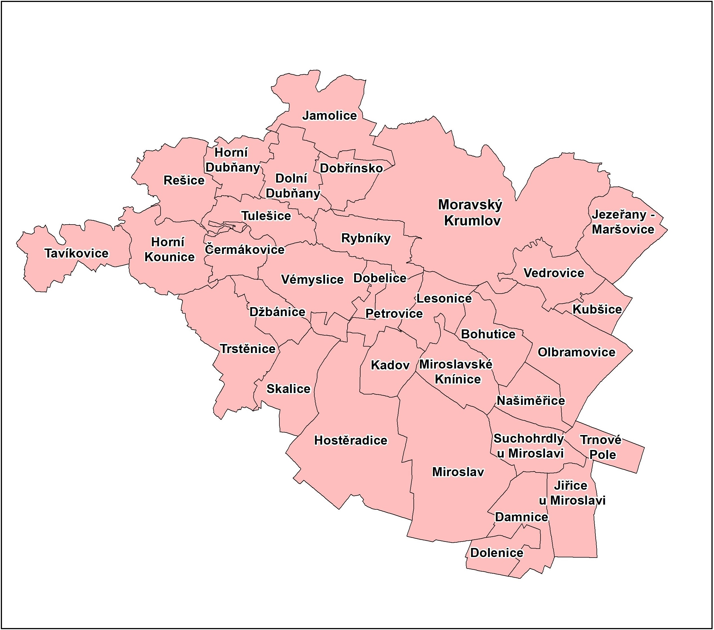

Správní obvod obce s rozšířenou působností (dále jen SO ORP) Moravský Krumlov je jedním z 21 správních obvodů v Jihomoravském kraji. Se svými 22 452 obyvately (stav k 31.12.2019) se rozkládá na ploše 348 km2 a zahrnuje 33 obcí.

V rámci Jihomoravského kraje je SO ORP Moravský Krumlov situováno v jihozápadní části. Na severozápadě území sousedí s SO ORP Třebíč a SO ORP Náměšť nad Oslavou v kraji Vysočina. V Jihomoravském kraji sousedí na jihu s SO ORP Znojmo, na východně s SO ORP Pohořelice a severovýchodě s SO ORP Ivančice.
Z geomorfologického hlediska náleží území do Alpsko-himalájského systému. Geomorfologické provincie zasahující na území SO ORP jsou Západní Karpaty v jihovýchodní části a Česká vysočina v severozápadní části. Dále pak geomorfologické subprovincie Vněkarpatská sníženina, Českomoravská vrchovina a ze severovýchodu Brněnská vrchovina. Většina území SO ORP Moravský Krumlov se nachází v Jevišovické pahorkatině a Dyjsko-svrateckém úvalu. Zasahuje sem i výběžek Boskovické brázdy a Bobravské vrchoviny.
Z geologického hlediska se v SO ORP vyskytují kvartérní horniny (hlíny, spraše, písky, štěrky), tercierní horniny (písky, jíly), granitoidy assyntské (žuly, granodiority), granodiority až diority (tonalitová řada), proterozoické horniny assyntsky zvrásněné, s různě silným variským přepracováním (břidlice, fylity, svory až pararuly), ortoruly, granulity a velmi pokročilé migmatity v moldanubiku a proterozoiku, dále jednotvárná série moldanubika (svorové ruly, pararuly až migmatity), permokarbonské horniny (pískovce, slepence, jílovce), mezozoické horniny alpinsky zvrásněné (pískovce, břidlice).
V SO ORP převažují dva půdní druhy, a to půdy převážně hlinité a půdy převážně hlinitopísčité až písčitohlinité. Z půdních typů se jedná o hnědozemě, kambizemě, fluvizemě, černozemě a luvizemě. Z hlediska využití ploch jsou zde hlavně zemědělské půdy a lesní pozemky a malou část zaujímají zastavěné plochy.
Z větších toků oblastí protéká řeka Rokytná, dále jsou zde menší potoky, například Rešický potok, Tulešický potok, Dolnodubňanský potok, Dobřínský potok, Lázeňský potok, Miroslavka nebo Skalička. Můžeme najít i menší vodní plochy jako například Dolnodubňanská nádrž, Týnský rybník nebo Miroslavský rybník.
Dle členění klimatických oblastí (Quitt, E. 1971) spadá území SO ORP Moravský Krumlov do mírně teplé oblasti MT11 a dvou teplých oblastí T2, T4. Do mírně teplé oblasti MT11 spadá zhruba polovina území správního obvodu v jeho severozápadní části. Teplá oblast T2 zaujímá jeho střed a teplá oblast T4 tvoří menší oblast zasahující z jihovýchodu. Charakteristika oblasti MT 11 se vyznačuje dlouhým teplým a suchým létem, krátkým přechodným obdobím s mírně teplým jarem a podzimem, zima je krátká, mírně teplá a velmi suchá s krátkým trváním sněhové pokrývky. Oblast T2 má dlouhé, teplé a suché léto, velmi krátké přechodné období s teplým až mírně teplým jarem i podzimem, krátkou, mírně teplou a suchou až velmi suchou zimou s velmi krátkým trváním sněhové pokrývky. Pro oblast T4 je typické velmi dlouhé léto, které je velmi teplé a velmi suché. Přechodné období je velmi krátké s teplým jarem a podzimem. Zima je krátká, teplá a suchá až velmi suchá s velmi krátkým trváním sněhové pokrývky.
Informace o chráněných územích.
Informace o počtu obcí, městysů a měst. Nejstarší obec, kdy vznikla města a městysy.
| Sídlo | Počet obyvatel | Status | Sídlo | Počet obyvatel | Status |
| Bohutice | 647 | Obec | Miroslav | 2990 | Město |
| Čermákovice | 92 | Obec | Miroslavské Knínice | 322 | Obec |
| Damnice | 348 | Obec | Moravský Krumlov | 5715 | Město |
| Dobelice | 264 | Obec | Našiměřice | 206 | Obec |
| Dobřínsko | 388 | Obec | Olbramovice | 1149 | Městys |
| Dolenice | 140 | Obec | Petrovice | 376 | Obec |
| Dolní Dubňany | 484 | Obec | Rešice | 334 | Obec |
| Džbánice | 144 | Obec | Rybníky | 444 | Obec |
| Horní Dubňany | 289 | Obec | Skalice | 515 | Obec |
| Horní Kounice | 303 | Obec | Suchohrdly u Miroslavi | 499 | Obec |
| Hostěradice | 1559 | Obec | Tavíkovice | 599 | Obec |
| Jamolice | 434 | Obec | Trnové Pole | 120 | Obec |
| Jezeřany-Maršovice | 794 | Obec | Trstěnice | 549 | Obec |
| Jiřice u Miroslavi | 458 | Obec | Tulešice | 193 | Obec |
| Kadov | 154 | Obec | Vedrovice | 850 | Obec |
| Kubšice | 154 | Obec | Vémyslice | 693 | Městys |
| Lesonice | 246 | Obec |
Doprava v SO ORP Moravský Krumlov tvoří součást Integrovaného dopravního systému Jihomoravského kraje (IDS JMK). Lidé využívají kromě automobilové dopravy také autobusovou dopravu a vlaky společnosti České dráhy, a.s. Autobusovou dopravu zajišťují dopravci ADOSA a.s.; BDS-BUS, s.r.o.; Břežanská dopravní společnost, s.r.o. a Znojemská dopravní společnost – PSOTA, s.r.o. Silniční síť tvoří silnice II. a III. třídy.
V SO ORP se nachází několik základních škol, např. ZŠ Vémyslice, ZŠ Moravský Krumlov Klášterní a Ivančická nebo ZŠ Miroslav, v těchto obcích se také nachází mateřské školy. V Moravském Krumlově jsou také dvě střední školy – Gymnázium Moravský Krumlov a Střední škola dopravy, obchodu a služeb Moravský Krumlov příspěvková organizace.
Informace o památkách.